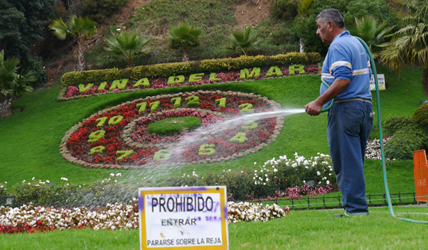
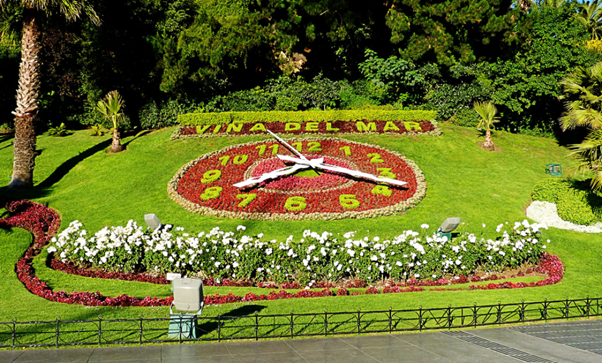

O Reloj de Flores é um grande relógio feito de flores que marca as horas de verdade. O Reloj de Flores existe desde 1962 e fica na praça Sucre. Esse relógio é uma atração gratuita e pode ser visitada a qualque momento do dia, sendo um ótimo lugar para se tirar fotos.

